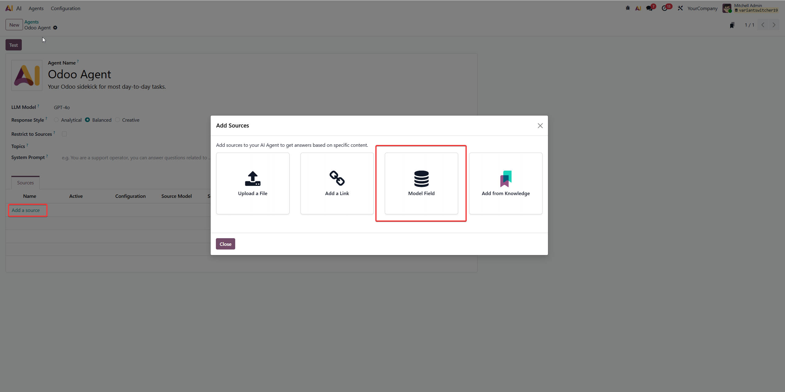
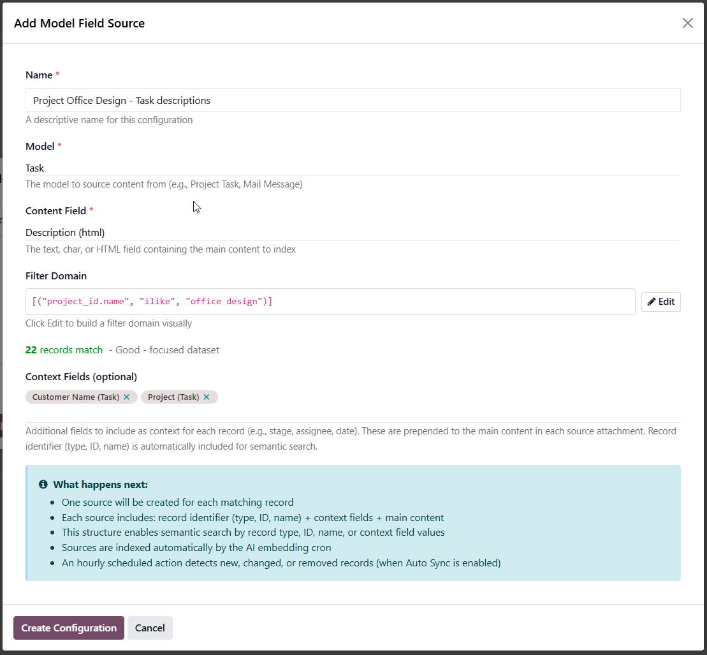
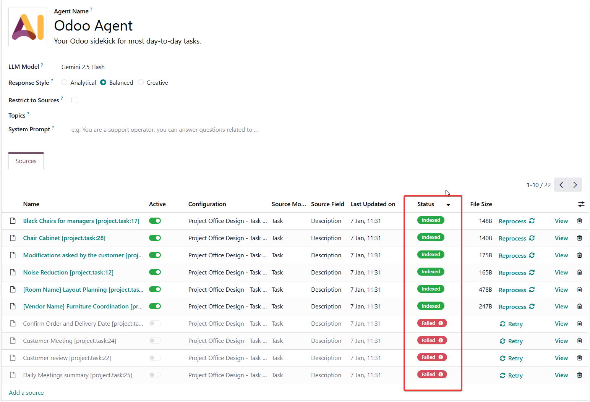
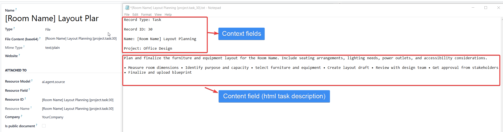
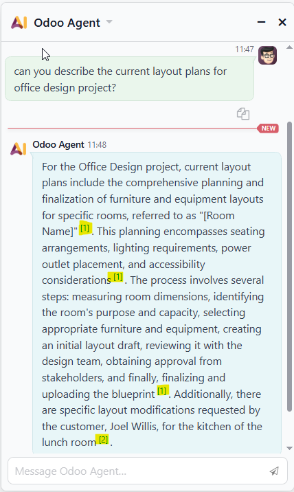
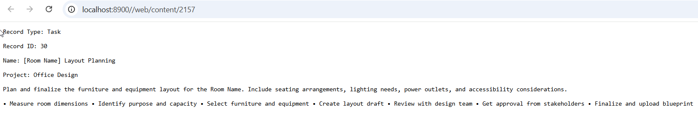
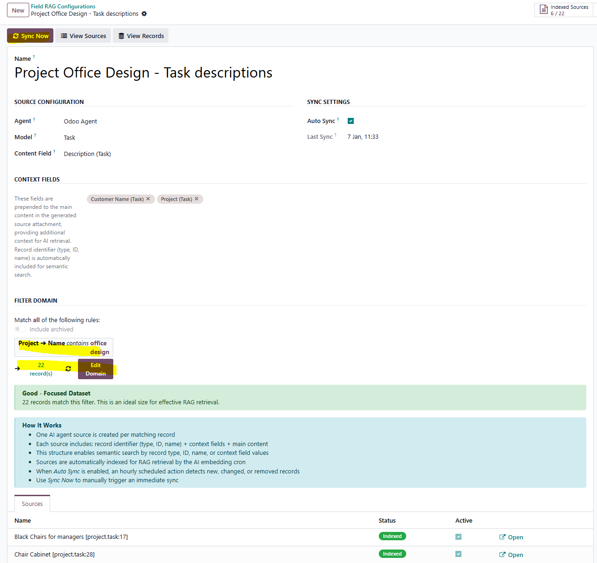
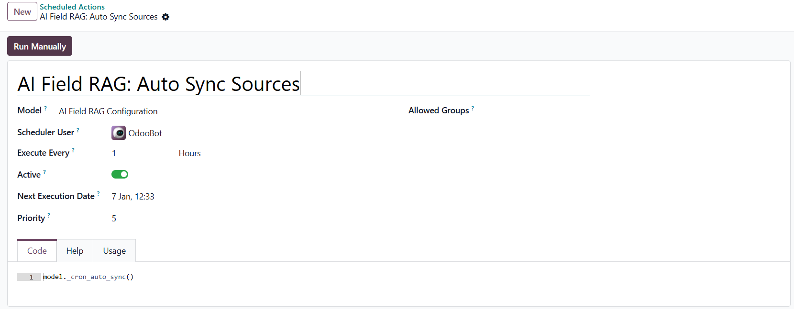

Seamlessly extends Odoo 19's built-in AI Agent with a new source type for Retrieval-Augmented Generation (RAG) powered by your own business data.
This module integrates directly into Odoo 19's native AI Agent framework, adding a new "Model Field" source option alongside the existing URL and file upload sources. Select any model's text, char, or HTML fields and automatically index them as AI agent sources — no external tools or complex setup required.
Whether it's project task descriptions, helpdesk ticket content, CRM notes, or any custom model data — transform your Odoo records into a searchable knowledge base that your AI agents can query naturally.
Each record becomes its own source with a structured semantic header including record type, ID, name, and configurable context fields. This enables powerful queries like "tasks assigned to John", "high priority tickets", or "project Alpha notes".
From your AI Agent, click "Add a Source" and select "Model Field"
Select model, content field, optional context fields, and filter domain
One source per record is created and indexed for vector search
Ask your AI agent questions — it retrieves relevant records automatically
A new "Model Field" option appears in the Add Source wizard

The "Add a Source" wizard with new Model Field option
Select your model, content field, filter domain, and context fields in one place

Configuration dialog: Name, Model, Content Field, Filter Domain, and Context Fields
Real-time feedback helps you create focused, effective RAG datasets
Ideal for focused, high-quality retrieval
Consider adding filters for better relevance
Large datasets may reduce retrieval accuracy
Each matching record becomes its own indexed source for semantic isolation

Sources list: 22 records from the configuration, showing indexed and failed statuses
Each source includes a semantic header with record metadata and context fields

Source attachment: Record Type, ID, Name, Context Fields, then Main Content
Ask questions and get answers grounded in your Odoo data

AI Agent responding to a question with information from indexed sources

Clicking a source citation opens the indexed attachment content
"What are the layout plans for the office design project?"
"Show me tasks assigned to John in the new website project"
"What are the high priority tickets about billing?"
"Summarize the CRM notes for customer ACME Corp"
"What was discussed in ticket #1234?"
"Find tasks related to database migration"
View and manage your Field RAG configurations from a dedicated form view

Configuration form: Sync button, statistics, context fields, domain filter, and sources list
Keep your AI knowledge base up-to-date with scheduled sync

Scheduled Action: "AI Field RAG: Auto Sync Sources" runs hourly by default
Select from any Odoo model with text, char, or HTML fields. Project tasks, helpdesk tickets, CRM leads, custom models — all supported.
Use Odoo domain syntax to select exactly which records to index. Filter by project, stage, date, assignee, or any field.
Enrich sources with metadata like stage, assignee, priority, or dates. Enables queries like "tasks assigned to John" or "urgent tickets".
Hourly scheduled action detects new, changed, and removed records. Keep your AI knowledge base current without manual intervention.
Each record becomes its own indexed source for semantic isolation. AI responses cite specific records, not bulk content.
HTML fields are automatically processed to extract clean text content. Works with rich text editors, email content, and formatted descriptions.
Index task descriptions from specific projects. Ask your AI agent about task details, progress, or blockers mentioned in descriptions.
Turn resolved ticket content into searchable knowledge. AI agents can find solutions from past tickets matching new issues.
Index internal notes and communications on CRM leads. Query customer history, preferences, and past interactions.
Make sale order notes and terms searchable. Find specific customer requirements or special instructions.
Index knowledge base articles, wiki pages, or documentation records. Create an AI-powered documentation assistant.
Works with any custom model that has text fields. Turn proprietary business data into AI-searchable knowledge.
Structured headers enable powerful, natural language queries
"Find project tasks about..." matches Record Type: Task
"What is task 123?" matches Record ID: 123
"Details on 'Website Redesign'" matches the record name
"Tasks assigned to John" (if user_id is context field)
"High priority tickets" (if priority is context field)
"Tasks in Done stage" (if stage_id is context field)
New source type 'field_rag' with dedicated processing logic
Cron job syncs all configurations with auto_sync enabled
Uses Odoo's built-in HTMLExtractor for clean text extraction
Write date tracking skips unchanged records during sync
We're here to help you get the most from your AI-powered Odoo.
support@codemarchant.com
codemarchant.com
Install the AI Agent Field RAG module and give your AI agents access to your business data.